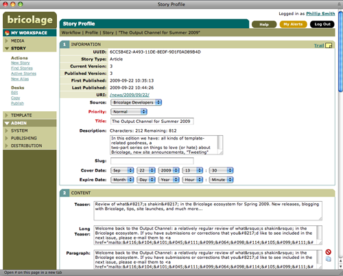
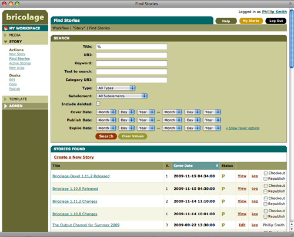
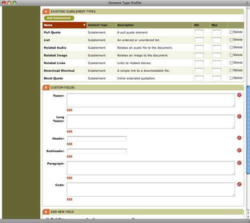
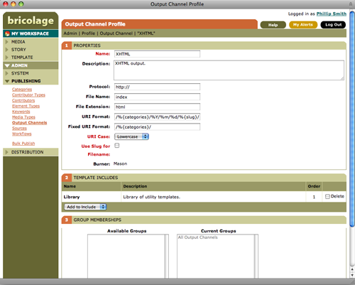
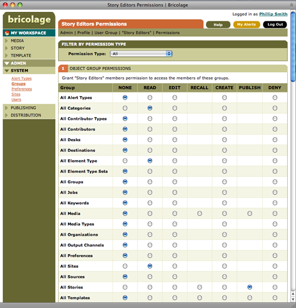
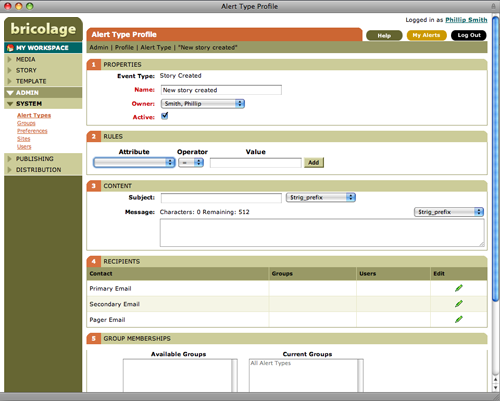
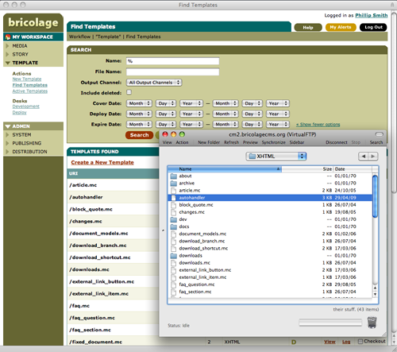

Screenshots and video tours
These screen shots and short video walkthroughs present just a handful of the features found in the Bricolage CMS. When you're ready to give it a try, visit the downloads page.
Content editing and media uploading
The "story profile" is the interface for adding or editing story metadata and content. The "content" section provides the content editing interface. Data fields and "sub-elements" (groupings of related data fields; e.g. a postal address) can be added easily, and are determined by the type of story being edited.
Category, keyword, and contributor associations each have their own sections for fast, AJAX-enhanced, editing. Content producers also have the opportunity to upload new media assets directly into articles, and can add arbitrary amounts of metadata to it at that time, such as a copyright notice, layout or positioning information, and so on.
Search: simple or advanced
The search interface provides an easy way to find stories or media assets. A simple search queries the titles, descriptions, URLs, and keywords of the stories in the database. The advanced search option allows you to find stories by even more attributes, including content, keywords, and story type—you can even search for deleted stories and reactivate them. Once the story has been found, it can be viewed or checked out right from the search results.
Powerful document modeling
Bricolage's strength lies in its unparalleled ability to model complex types of documents and then provide an easy-to-use, web-based user interface to add and edit those documents.
The "element type profile" is where you define the data fields that will be used in your documents. Data fields can be any number of types, including WYSIWYG, radio buttons, select and option lists, etc. They can even be dynamically populated, using simple SQL-like code snippets that make it a snap to integrate Bricolage with other systems.
Data fields can also be grouped together into "sub-elements" that can be used across document types. For example, a movie review may share some common data fields with a book review such as a title, release date, and five-star rating, but otherwise contain different data fields. Sub-elements let you model these common sets of data fields and then add them to the document types. If you change a sub-element, that change is available across all the documents that use it.
Output channels and destinations
An output channel defines a collection of templates that output story content in a particular format. An output channel also allows you to define the default file name and extension for files it outputs, as well as the format of the URLs generated for those files.
For example, when creating a listing of stories, you may want to generate an HTML version, a RSS version, and a JSON version all at the same time. Or, when displaying a single story, you may want to generate a PDF version and XML version at the same time. Output channels let you do all this and much more.
Output channels can also include templates from other output channels, allowing template behavior to be inherited. Output channels can also be shared across sites within Bricolage—a dream for overworked developers, allowing them to distribute their latest work across several sites at once.
Permissions, event logging, and revisions
Large organizations and system administrators will appreciate Bricolage's powerful group and object-based permissions system, detailed event logging, and revision control system for documents, media, and templates.
Permissions are both flexible and straightforward. Permissions are granted to members of a group of users, allowing them to access a given group of objects. And six permission levels are available: read, edit, recall, create, publish, and deny. This makes possible a highly flexible workflow modeling, so that you can ensure that the right users can access the right content at the right time, in the right place.
Logging and revisions make it possible to track down changes quickly to stories, media assets, and templates, to compare two versions visually, and—if necessary—revert to a previously published version of any document. Deleted documents are simply marked as inactive, making it a snap to recover from accidental deletions.
Keep on top of things with alerts
Bricolage can send you messages, or “alerts,” when certain actions are carried out. For example, if you have submitted a new story to be published next Tuesday, you can have Bricolage send you an alert as soon as it is published to let you know that the action has been executed. Alerts are highly customizable, using simple rules, and can be configured for any Bricolage object.
Built-in IDE: Templates editable & deployable through an FTP interface
Bricolage ships with a virtual FTP server, which is used to provide FTP access to Bricolage templates. This provides a familiar, comfortable development environment for programmers working on templates. Many editors provide FTP modes that make editing files via FTP as easy as editing files locally.
If you edit a template via the FTP interface, it’s instantly checked out and moved it to your workspace. While the template is in your workspace, it acts like your own personal development sandbox. If you preview a document after you make changes, you can see any changes that you've made; in the meantime, other users can continue to preview and publish documents without seeing your experimental changes. When you're ready to make the changes live for other users, simply use the FTP interface to check it in and deploy it.
Enterprise-ready and hacker friendly
Scalability
Bricolage is designed to scale to the needs of the largest organizations. Scalability is ensured by Bricolage’s ability to distribute the load between separate database, application, preview, and distribution servers. Because Bricolage operates independent of the delivery of content to the final audience, your site's front-end servers can scale independently of Bricolage.
Flexible multi-site management
Flexible multi-site management allows you to divide responsibilities among team members while keeping content centrally managed, accessible via a common interface, and in a single Bricolage instance. Sites can have their own categories, workflows, output channels, and distribution destinations, or they can share desks, output channels, and templates. They can also share document models, so that different sites can manage the same types of documents but publish them with their own templates. A single Bricolage install can handle as many or as few sites as needed, with as much or as little intermingling of content, templates, and workflows as desired. Bricolage is ready-made for publishing empires.
Document aliasing
Document aliasing provides a simple approach for each Bricolage-managed site to publish content from others without violating one another's editorial integrity. For example, if you have several departments in your organization managing their own sites, they might decide that they sometimes need to publish each other's content. Fortunately, they can. Users with the correct permissions can access other sites and create aliases to their documents. They can then edit the title, URL, and keywords of the alias for the benefit of their own site, but the content of the story itself remains in read-only form, so that editorial control remains in the hands of the originating site.
LDAP and pluggable authentication
Bricolage includes support for a pluggable authentication architecture, and in addition to its built-in authentication, it has a module for authentication against an LDAP directory server. Authentication can be limited to members of a directory group, and supports LDAP v.3 and TLS connectivity. If your organization relies on a directory server, such as Windows Active Directory, Novel eDirectory, or OpenLDAP, this feature is for you.
Programmable: SOAP interface and powerful API
Bricolage features a robust and full-featured SOAP interface. The included command-line client makes it easy to import and export documents, templates, and administrative objects, as well as bulk publish or update content. The ability to import content is especially important for organizations that wish to migrate their existing documents into Bricolage for management and publishing going forward. In addition, Bricolage's well-documented API enables developers to get up and running quickly.
Easily integrated & extended: CPAN, sFTP, FTP, Webdav, and more
The "Perl loader" makes it possible to pass a line of Perl in Bricolage's configuration file and have it executed at startup time in the same namespace as your templates. This makes it easy to harness the more than 17,000 modules on the Comprehensive Perl Archive Network (CPAN) right inside of Bricolage.
Additionally, Bricolage supports several "actions" and "movers" for distributing documents. Documents can be published directly to a file system, or via FTP, sFTP, or Webdav, even e-mail or Jabber. You can also Akamaize documents at publish time, or validate them against a DTD to ensure that they conform to a specification.